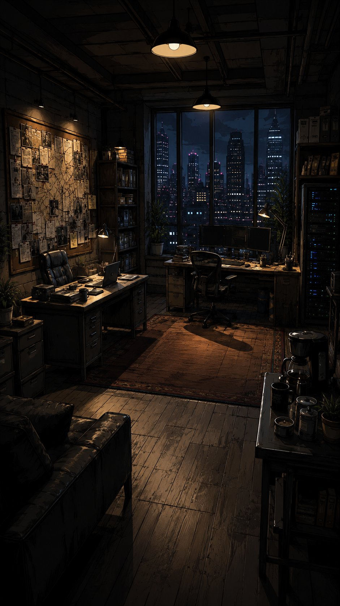
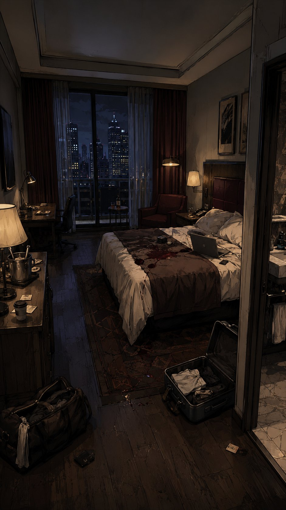
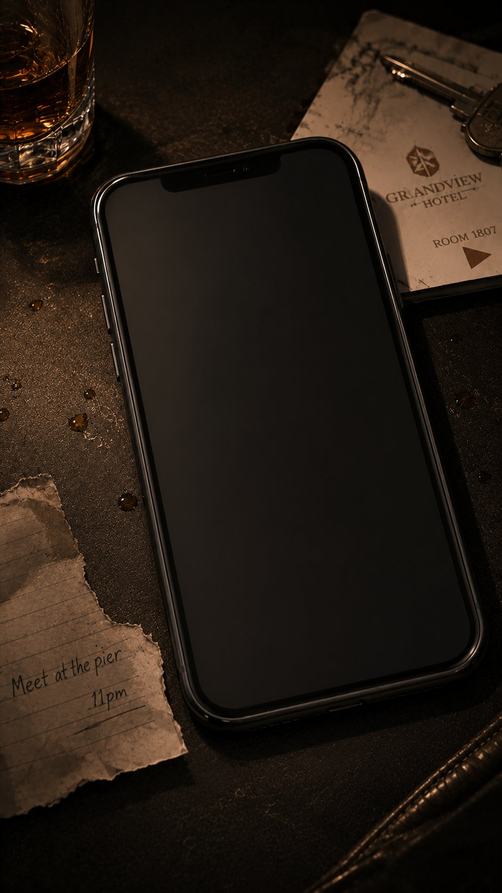
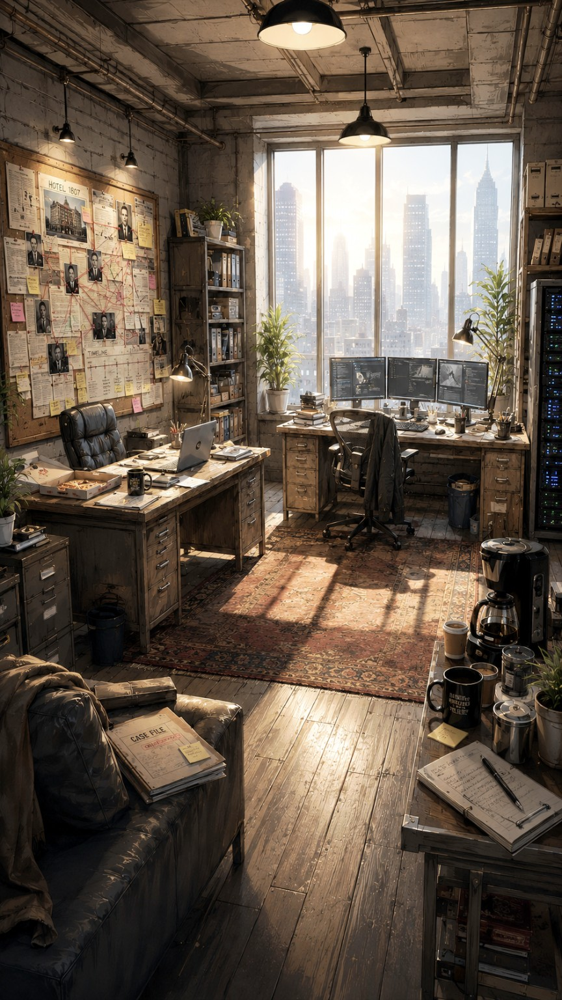
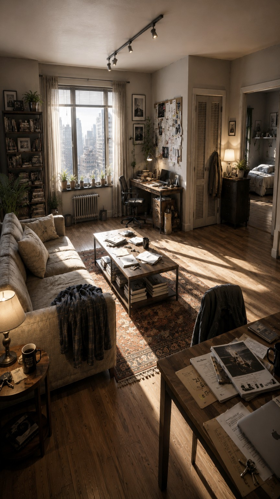
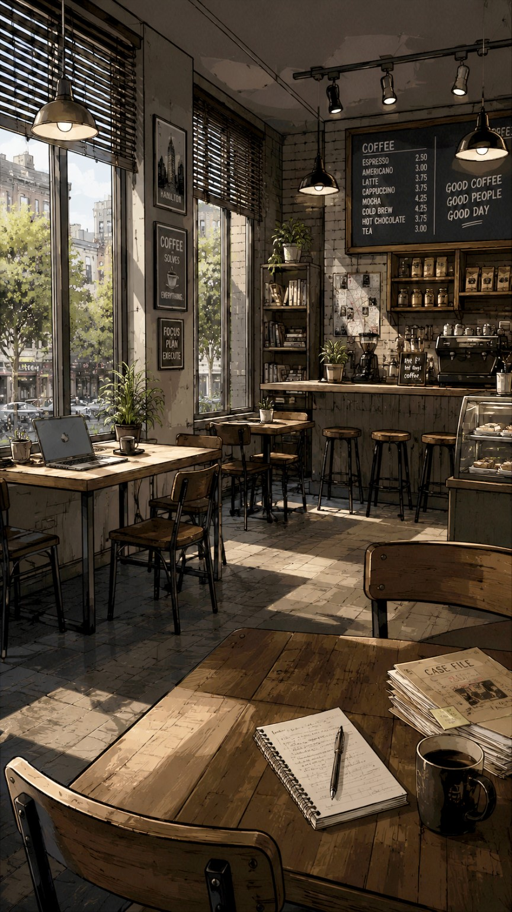
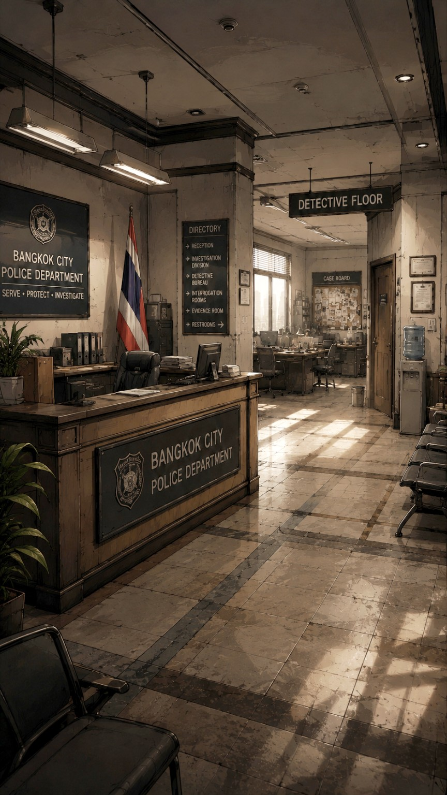
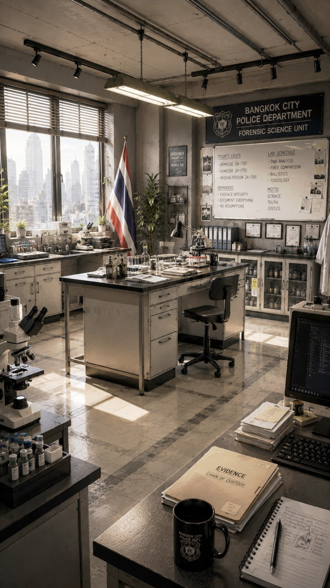
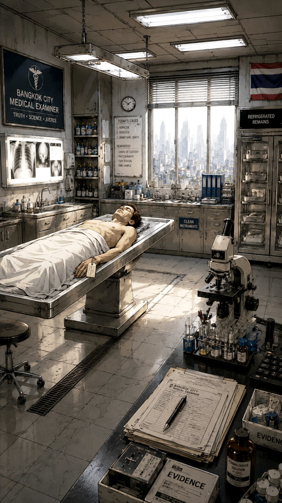

NEW FEATURE
Character Journal Unlocked
Open Menu (☰) to view
BENEDICTINTERACTIVE
A Benedict Interactive game
LAST
WITNESS
The dead don't talk. Evidence does.

0%

0%

23:47
Saturday, June 14
0%
ROOM 1807
0%

0%

0%

0%
First Contact
Elena has been added to the Character Journal


64%
Trace the original laboratory record
CHAIN OF CUSTODY

88%
THE BODY KEEPS ITS OWN TIME
Case Closed
CHAPTER II COMPLETE
THE ELEVEN-MINUTE LIE
The science is genuine. The timeline around it was engineered. The investigation continues.
LAST WITNESS
CHAPTER III
This chapter is currently in development. Your Chapter II progress has been saved.
Case Closed
CHAPTER 1 COMPLETE
ROOM 1807
The investigation continues.
100%
Saved
Dialogue History
Case File
Characters
Character Journal Unlocked
North added to the journal
Settings
Developer Access
LAST WITNESSDeveloper Console · Internal Access
Jump Location
Developer Tools
AUTHENTICATION SUCCESSFUL
DEVELOPER CONSOLE UNLOCKED
DEVELOPER CONSOLE UNLOCKED